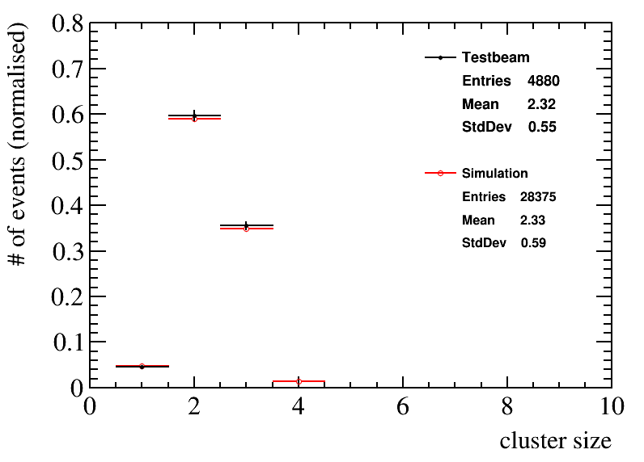

Simulation studies of scintillating fibre
mats for the LHCb upgrade


Inhaltsverzeichnis
Diese Präsentation beinhaltet:
- Vorstellung des LHCb Detektors und die Motivation des Upgrades
- Vorstellung des SciFi Trackers
- Testbeam Kampagne 2016 am CERN und anschließende Datenanalyse
- stand-alone Simulation von szintillierenden Fasermatten
- Zusammenfassung
Vorstellung des
LHCb Detektors und dessen Upgrade
Das LHCb Experiment

- LHCb misst CP-Verletzung im $B_{d}$ und $B_{s}$ Sytem, sucht nach Neuer Physik jenseits des Standardmodells
- Hauptanforderungen an den Detektor: zuverlässige Unterscheidung von $\pi$/$K$, hohe Zerfallszeit Auflösung, gute Auflösung von Teilchenmassen
- RICH 1/2: messen Teilchengeschwindigkeit über Cherenkov-Effekt, ermöglicht Teilchenidentifizierung (z.B. bei $\pi$ und $K$)
- VELO: misst 3D Track-Positionen zur Rekonstruktion von Vertices, ermöglicht u.A. Messung von Zerfallszeiten
- Tracking Stationen: ermöglichen Rekonstruktion von Teilchenspuren und Massen
Detektor Komponenten:
Detektor Upgrade
- instantane Luminosität wird auf $\mathcal{L}_{\text{inst}}= 2\cdot 10^{33}~\text{cm}^{-2}\text{s}^{-1}$ erhöht
- verbesserte Trigger Effizienz für eine Vielzahl an Zerfallskanälen
- Trigger: Einsatz eines vollen Software-Trigger Systems, benötigt Auslese des gesamten Detektors mit $40~\text{MHz}$ $\rightarrow$ Austausch der Front-End Elektronik
- Tracking: erhöhte $\mathcal{L}_{\text{inst}}$ verlangt nach höherer Granularität und Strahlenhärte der Tracking-Detektoren $\rightarrow$ Upgrade des VELO und TT, sowie Ersetzung von T1-T3 durch dem SciFi Tracker
Veränderungen:
Vorstellung des
SciFi Trackers
Anforderungen
- Hit-Effizienz so groß wie möglich ($\approx 99\,\%$) mit einer Rausch-Cluster-Rate von $\lt 10\,\%$
- räumliche Auflösung von $\le 100~\mu\text{m}$ in der Ablenkebene des Magneten
- Materialmenge innerhalb der Akzeptanz minimieren $(\chi/\chi_0 \le 1\,\%)$
- Auslese des Detektors mit $40~\text{MHz}$
- Detektor sollte diese Anforderungen auch nach Bestrahlung in Höhe von $50~\text{fb}^{-1}$ erfüllen
Layout
- in allen $3$ Stationen gibt es $4$ Detektorlagen in $x$-$u$-$v$-$x$ Anordnung
- Detektorlagen bestehen aus $10$-$12$ Modulen mit jeweils $8$ Fasermatten
- Fasermatten haben $6$ Lagen aus $2.5~\text{m}$ langen szintillierenden Fasern,an einem Ende ist ein Spiegel am Anderen Auslese durch SiPMs

Szintillierende Fasern
- wenige $\text{eV}$ deponierter Energie reichen aus um das Polystyrol anzuregen
- Anregungsenergie geht auf P-Terphenyle via Förster-Transfer über $\rightarrow$ kürzere Relaxationszeit und bessere Lichtausbeute
- Verminderung von Selbstabsorption durch Wellenlängenschieber (TPB)
- Claddings haben abfallenden Brechungsindex $\rightarrow$ erhöht Lichteinfang auf ca. $10.7\,\%$
- wellenlängen und winkelabhängige Abschwächung des Lichts in der Faser
Silizium Photomultiplier (SiPM)
- Multi-Pixel Lawinenphotodioden im Geiger Modus
- SiPMs aus $128$ Kanälen mit je $4\times 26$ Pixeln
- einzelne Pixel können nur einmal pro Event feuern $\rightarrow N_{\text{photon}} \lt N_{\text{pixel}}$ um Sättigung einzuschränken
- Photonen-Detektions-Effizienz (PDE): $$\text{PDE} = \frac{N_{\text{detected}}}{N_{\text{total}}} = \epsilon_{\text{qe}}(\lambda) \cdot \epsilon_{\text{avalanche}}(V, T)\cdot \epsilon_{\text{geometric}}$$
- Rauscheffekte: thermisches Rauschen (DCR), Crosstalk und After-Pulse
Clusterbildung
- erzeugte Photonen können sich über mehrere SiPM-Kanäle verteilen
- Algorithmus kombiniert benachbarte Kanäle mit Ladung
- dabei werden Grenzwerte angewendet um Rauschsignale zu unterdrücken
- Information zur Teilchenposition aus ladungsgewichtetem Mittelwert
- wichtige Größen: Clusterladung, Clustergröße und mittlere Signalposition
Analyse der
Testbeam Kampagne 2016
Datenaufnahme
-
verwendete Prototyp Fasermatten:
- $5$ lagige Matte $2014$ im LHC Tunnel bestrahlt
- $6$ lagige Matte $2015$ in der CERN PS IRRAD Einrichtung bestrahlt
- $6$ lagige Matte $2016$ in der CERN PS IRRAD Einrichtung bestrahlt (DUT) Bestrahlung soll Strahlenschaden nach der LHCb-Upgrade Lebensdauer für Matten nahe des Strahlrohrs (worst case) entsprechen
Konvertierung der Rohdaten
-
Messungen zur Kalibrierung:
- Pedestal: Messung ohne aktive Lichtquelle
- Verstärkung: Messung mit angeschalteten LED-Leisten
-
Umrechung der $ADC$ Zahl:
$$ADC_{\text{eff}}=\frac{ADC_{\text{total}} - ADC_{\text{pedestal}}}{f_{\text{gain}}}$$
-
vertikale Fehljustierung der Matten im Messaufbau $\rightarrow$
Veränderung der Clusterposition der Tracking-Module bis sie mit DUT übereinstimmen
Selektion
- Erzeugung eines möglichst 'sauberen' Datensatzes, d.h. Trennung von Events mit Rauschclustern, Sekundärteilchen
- Folgende Anforderungen wurden an ein Event gestellt:
- es gibt genau ein Cluster in beiden Tracking-Modulen
- ein Cluster im DUT darf nur um $\le 1~\text{mm}$ von der Position abweichen, die geometrisch aus Clusterpositionen der Tracking-Module folgt
- maximale Clustergröße ist $6$
- Grenzwerte des Cluster-Algorithmus: Summe $4.5~\text{p.e.}$; Start $2.5~\text{p.e.}$; Nachbar $1.5~\text{p.e.}$
Clusterladung I
- Clusterladung hat großen Einfluss auf die Tracking-Performanz des Detektors
- kleine Minima sind Folge von SiPM Lücken zwischen zwei Arrays bzw. Dies
- kaum Unterschied zwischen Pion/Myon Strahl $\leftarrow$ sind beides MIPs
- im bestrahlten Bereich sinkt Clusterladung auf $64\,\%$
Clusterladung II
- Vergleich zwischen Hamamatsu H2014 und H2015 SiPMs
- H2015 SiPMs weisen leicht höheren Charge ($\lt 2\,\%$) auf durch bessere PDE ($\approx 10\,\%$), höhere Verstärkung durch Rauscheffekte der H2014 gleichen dies jedoch fast aus
Clustergröße vs. Clusterladung
- linearer Fit der mittleren Clustergrößen jedes Clusterladungs-Bins
- $\rightarrow$ H2014 SiPMs (links) haben bei gleicher Ladung größere Cluster als H2015 (rechts)
Hit Effizienz I
- die Hit Effizienz ist von fundamentaler Bedeutung für den SciFi Tracker
- Berechung als Quotient zwischen Events mit gefundenem Cluster im DUT und allen betrachteten Events
- ist stark abhängig von den angewandten Cluster-Grenzwerten
| SiPM | Summen-Grenzwert [p.e.] | bestrahlt [$\%$] | unbestrahlt [$\%$] | |
|---|---|---|---|---|
| H2015 | 4.5 | $85.4\pm0.5$ | $98.0\pm0.2$ | |
| H2015 | 2.5 | $94.6\pm0.2$ | $99.0\pm0.1$ | |
| H2014 | 4.5 | $81.2\pm0.6$ | $96.9\pm0.1$ | |
| H2014 | 2.5 | $91.1\pm0.5$ | $98.4\pm0.1$ | |
Hit Effizienz II
- wichtige Kenngröße: Hit Effizienz in Abhängigkeit der Clusterladung
- Fit mit exponential Funktion $$f(x) = 1-\alpha e^{-x/\beta}$$
- Hit Effizienz höher für H2015 SiPMs, da sie geringere Clustergrößen und höhere Clusterladung aufweisen
Winkelmessungen
- Veränderung des Einfallswinkels des Strahls durch Kippen der Matten
- Clusterladung und Größen steigen wie erwartet mit dem Winekl an
- Winkelmessungen ermöglichen aussagekräftige Gegenproben mit Simulationsergebnissen
Entwicklung und Ergebnisse der
stand-alone Simulation
Motivation
-
LHCb Simulation des SciFi Trackers verwendet mehrere vereinfachte Modelle/Annahmen um effektiv zu arbeiten:
- Fasermatten sind homogene Blöcke $\rightarrow$ keine Fasermatrix-Struktur und Lichtführung
- Anzahl erzeugter Photonen wird über Menge an deponierter Energie abgeschätzt
- Abschwächung des Lichts $$a(l)=F_s \exp{\left(-\frac{l}{\lambda_{short}}\right)} + (1-F_S) \exp{\left(-\frac{l}{\lambda_{long}}\right)}$$
- Spur der Photonen wird nicht berechnet $\rightarrow$ Verteilung auf SiPM Kanäle über das light-sharing Model Simulationsergebnisse weisen signifikante Unterschiede zu Testbeam Daten auf (zu kleine Clustergrößen, Hit Effizienz überschätzt, etc.) $\rightarrow$ Modelle müssen erweitert/verbessert werden
⇒ Erstellung von detaillierten Simulationen
stand-alone Simulation: Aufbau
- 2D Struktur eines Querschnitts einer Fasermatte mit realistischer Faserpositionierung implementiert
- für jede getroffene Faser: Abstand Fasermittelpunkt zu Teilchenspur berechnen
- zufälliges Event aus $\mbox{Geant4}$ Einzelfaser-Simulation mit ähnlichem Faser-Spur-Abstand
- $\mbox{Geant4}$ liefert Austrittsort, Impulsvektor und Wellenlänge für alle austretenden Photonen
- Berechnung des Auftreffpunkts in SiPM-Ebene ($100~\mu\text{m}$ Lücke aus Epoxidharz)
- Befüllen der SiPM Kanäle unter Berücksichtigung von PDE, Noise und Sättigung
- Ausführen eines Cluster-Algorithmus
Ergebnisse (Teilcheneinfallswinkel $0^{\circ}$)

Vergleich mit Testbeam Daten: Clusterladung I
-
Einfallswinkel: $0^{\circ}$, $3^{\circ}$, $10^{\circ}$, $15^{\circ}$, $20^{\circ}$ und $25^{\circ}$
Vergleich mit Testbeam Daten: Clustergröße I
Faser-Crosstalk
- bisher: alle Photonen die nicht via Totalreflexion in der Faser propagieren werden nicht weiter betrachtet
- aber: UV-Photonen können primäre Faser verlassen ohne wellenlängen-verschoben zu werden $\rightarrow$ Eintritt in Nachbar-Faser $\rightarrow$ können dort wellenlängen-verschoben werden und ans Faserende propagieren
- Messung von Faser-Crosstalk in $\mbox{Geant4}$ Simulation $\rightarrow$ Anteil von Crosstalk an der Gesamtladung: $20\,\%$
Auswirkung von Faser-Crosstalk
Vergleich mit Testbeam Daten: Clusterladung II

Vergleich mit Testbeam Daten: Clustergröße II
Vergleich mit Testbeam Daten: Hit Effizienz I
- Veränderung der Anregungsposition oder des $\# Photonen/Energie$-Verhältnisses $\rightarrow$ Erzegung von Datensätzen mit verschiedener mittlerer Clusterladung
- Hit Effizienz mit Cluster-Algorithmus ermittlen
- Test für verschiedene Cluster-Grenzwerte ohne weiteres Tuning für aussagekräftigen Vergleich
Vergleich mit Testbeam Daten: Hit Effizienz II
Zusammenfassung
Testbeam Analyse:
- Clusterladung sinkt auf $\approx 64\,\%$ im bestrahlten Bereich des DUT
- Hit Effizienz sinkt auf $(85.4\pm 0.5)\,\%$ für Standard Cluster-Grenzen
- Verbesserung der Detektor-Performanz durch H2015 SiPMs gegenüber H2014
- weitere Verbesserung können durch H2016 SiPMs und die finale Modulproduktion erwartet werden
Simulation:
- Vergleich mit Testbeam in Clusterladung erfolgreich für alle Einfallswinkel
- Nach Implementierung von Faser-Crosstalk mit $\approx 19\,\%$ der Gesamtladung stimmen auch Clustergrößen und Hit-Effizienzen überein
- Dieser Erfolg führte zu einer Implementierung von Faser Crosstalk in der LHCb Software
Gibt es Fragen?
Anhang
Quellen
[1] LHCb collaboration, The LHCb Detector at the LHC
doi:10.1088/1748-0221/3/08/S08005
[2] LHCb collaboration, Letter of Intent for the LHCb Upgrade cds.cern.ch/record/1333091
[3] LHCb collaboration, LHCb Tracker Upgrade Technical Design Report cds.cern.ch/record/1647400
[4] A. Kuonen et al., LHCb Scintillating Fibre Tracker Engineering Design Review: Silicon Photomultipliers cds.cern.ch/record/2147853
[5] R. Ekelhof, Studies for the LHCb SciFi Tracker - Development of Modules from Scintillating Fibres and Tests of their Radiation Hardness cds.cern.ch/record/2212494
[6] M. Deckenhoff, Scintillating Fibre and Silicon Photomultiplier Studies for the LHCb upgrade cds.cern.ch/record/2140068
[2] LHCb collaboration, Letter of Intent for the LHCb Upgrade cds.cern.ch/record/1333091
[3] LHCb collaboration, LHCb Tracker Upgrade Technical Design Report cds.cern.ch/record/1647400
[4] A. Kuonen et al., LHCb Scintillating Fibre Tracker Engineering Design Review: Silicon Photomultipliers cds.cern.ch/record/2147853
[5] R. Ekelhof, Studies for the LHCb SciFi Tracker - Development of Modules from Scintillating Fibres and Tests of their Radiation Hardness cds.cern.ch/record/2212494
[6] M. Deckenhoff, Scintillating Fibre and Silicon Photomultiplier Studies for the LHCb upgrade cds.cern.ch/record/2140068